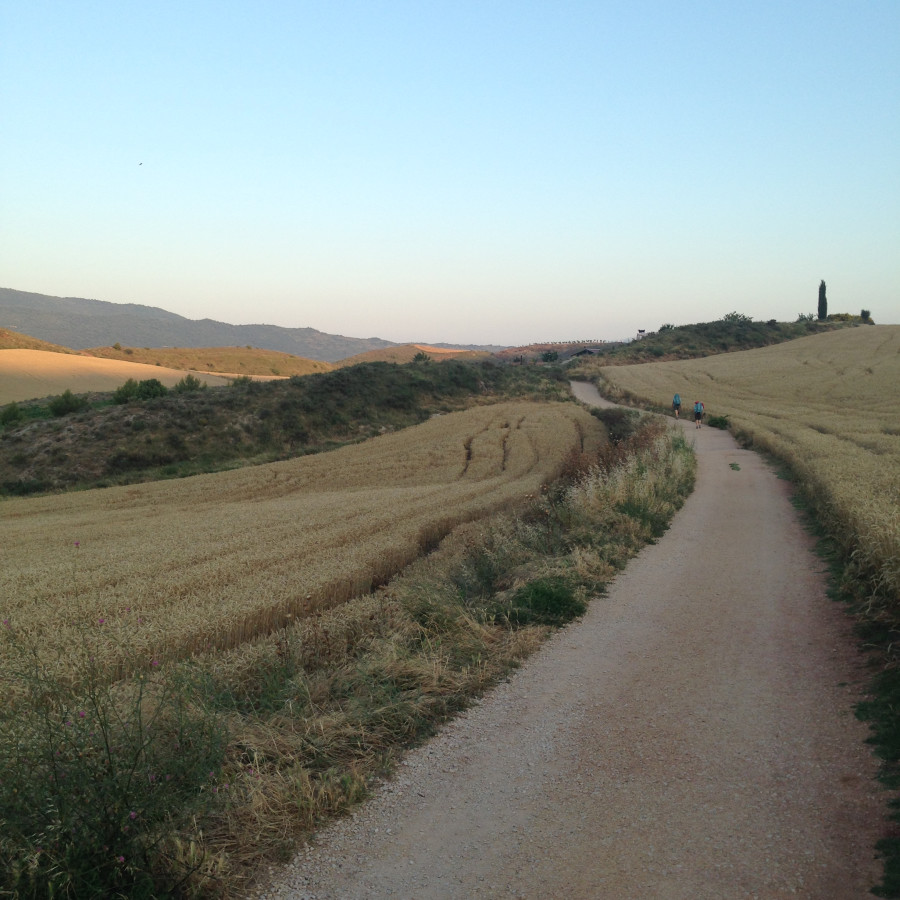--
Chemin de Compostelle par Ludwig-E.Dufour
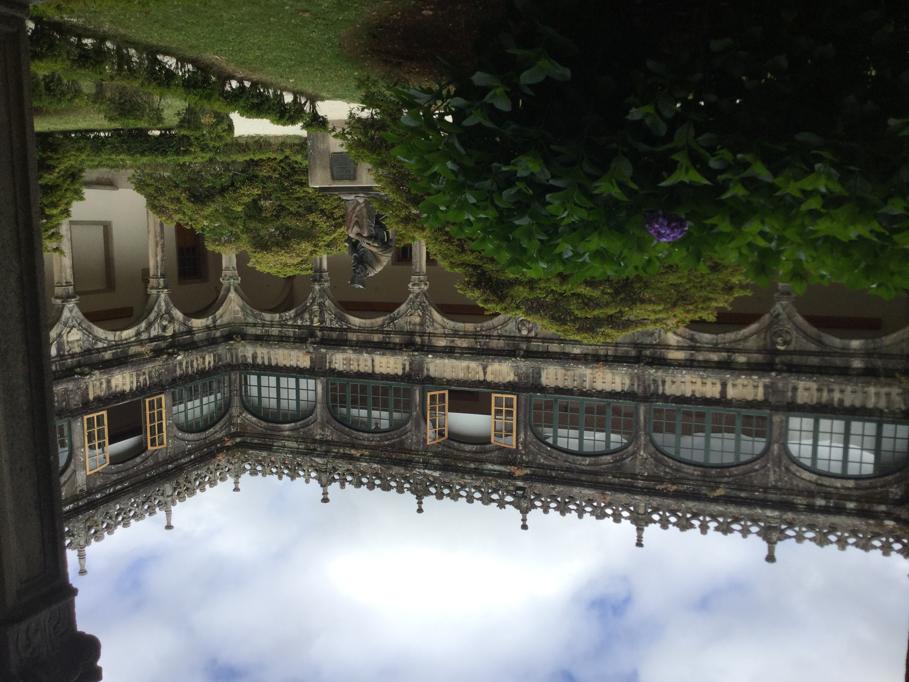
Abbaye santiago par Ludwig-E.Duofur
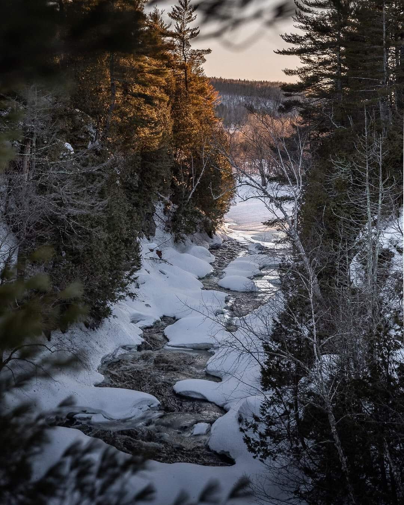
Parc des chûtes par Ludwig-E.DufourChemin de Compostelle par Ludwig-E.Dufour
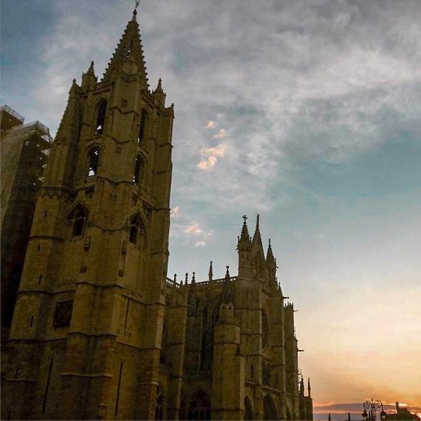
Cathédrale de Léon par Ludwig-E.Dufour
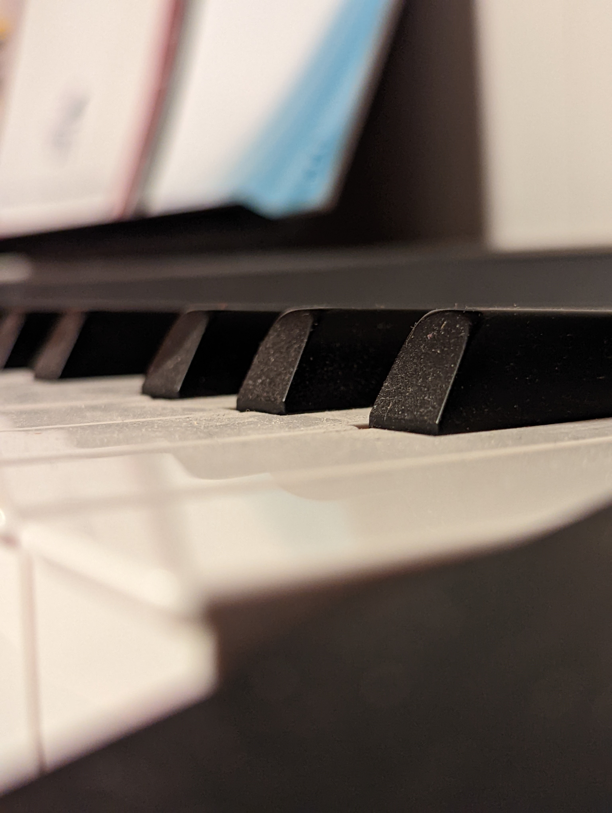
Plan piano par Ludwig-E.Dufour
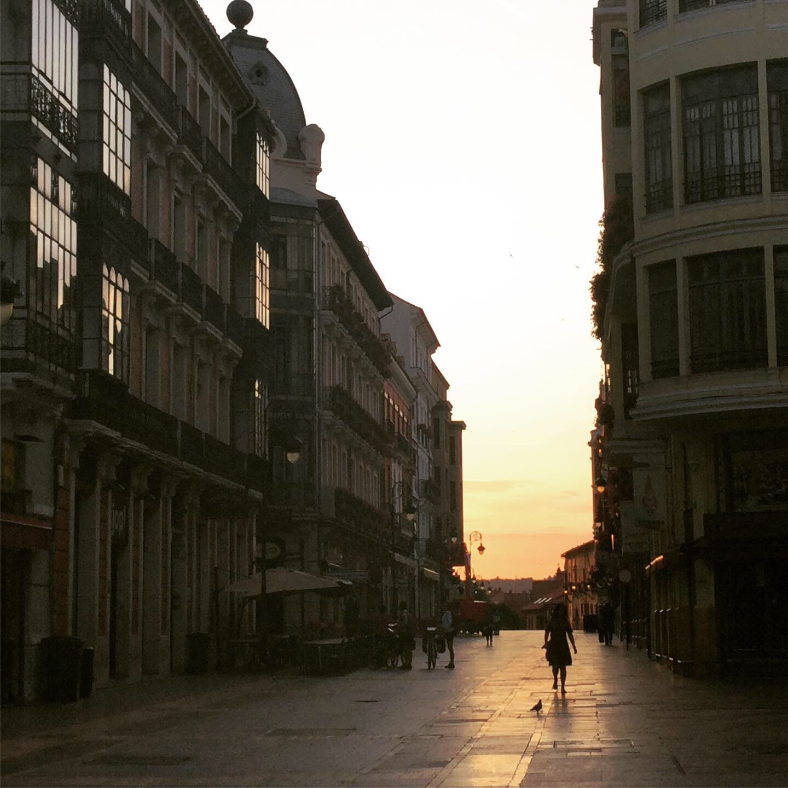
Street de Léon par Ludwig-E.Dufour
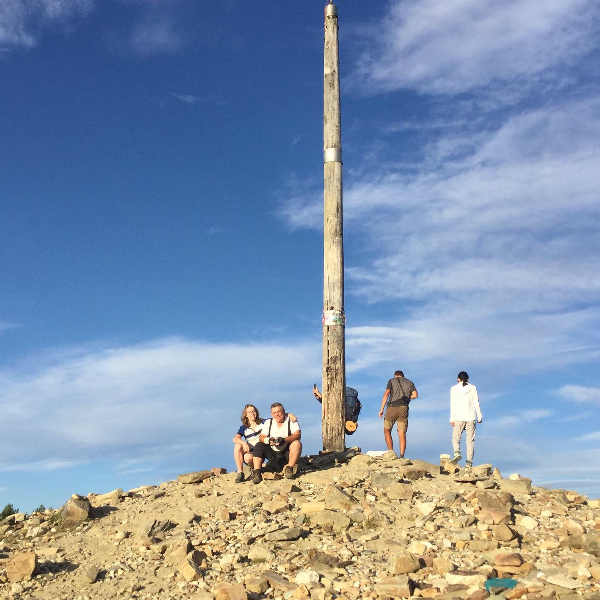
Cruz de Ferro par Ludwig-E.Dufour
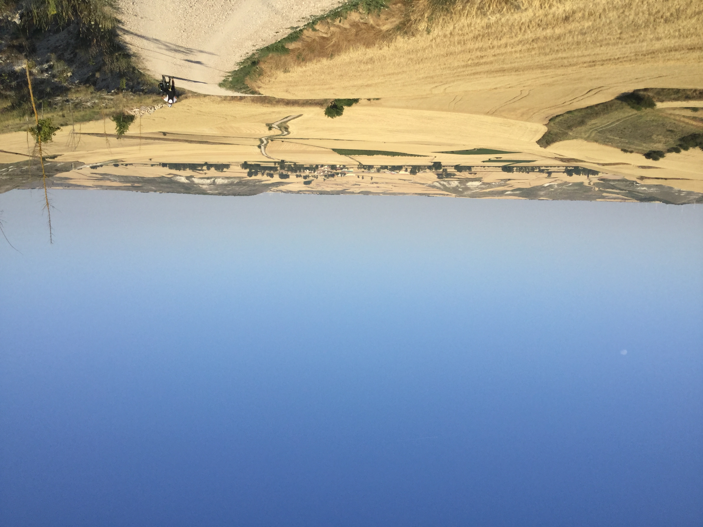
Chemin de compostelle par Ludwig-E.Dufour
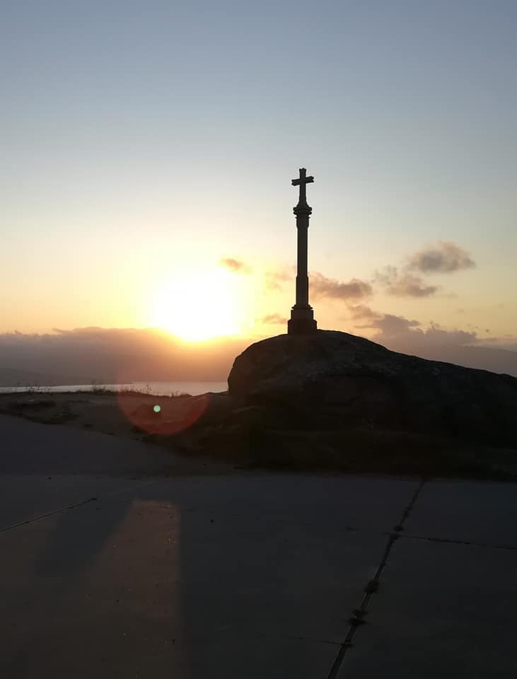
Finesterre par Ludwig-E.Dufour
Ruelle sur le chemin par Ludwig-E.DufourCompétition d'escalade par Ludwig-E.Dufour
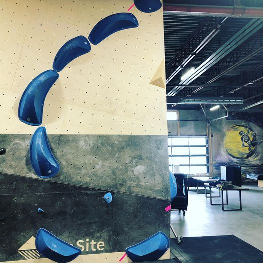
Route-Setting escalade par Ludwig-E.Dufour
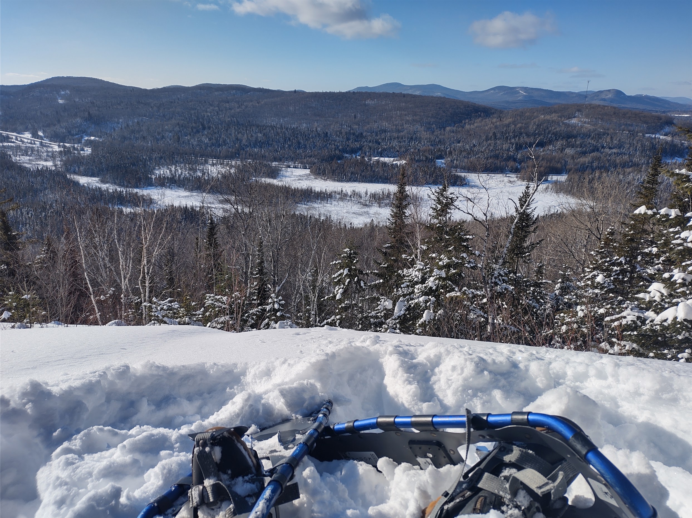
Randonné ♥ par Ludwig-E.Dufour
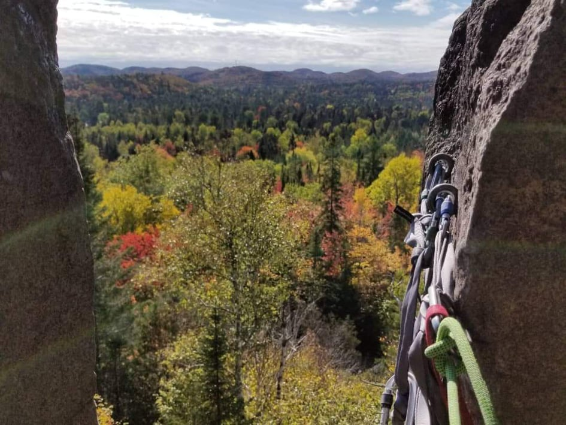
Escalade en lead par Ludwig-E.Dufour
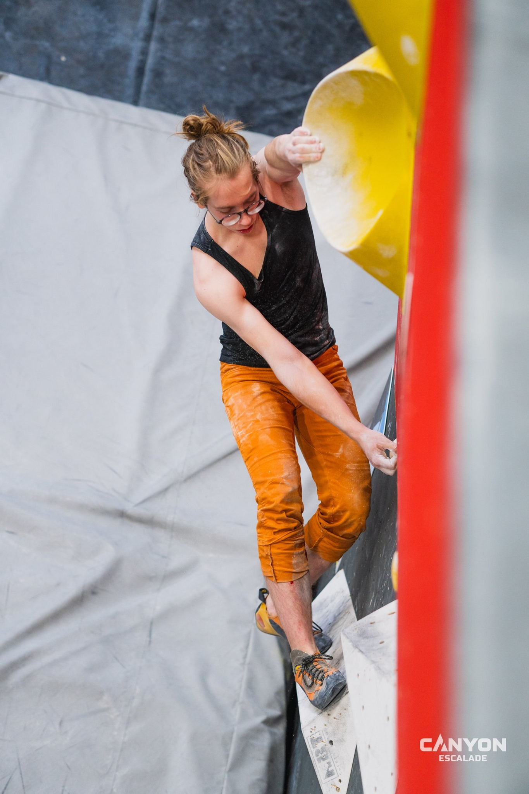
Compétition d'escalade par Ludwig-E.Dufour